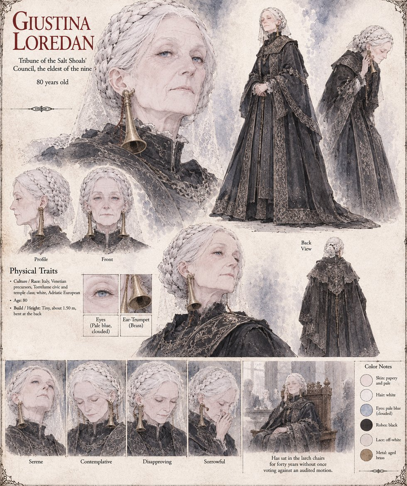

Giustina Loredan
Tribune of the Council of Nine Shoals · the eldest of the nine · forty years in the larch chairs · 80
When Domenica Ardizzon reads her précis to the Council of Nine Shoals in the third week of Garren, the silence is that of nine people who have each done the same sum, and it ends when the youngest Tribune asks whether the Council has the power to do what it is evidently about to do. The oldest answers him: a small, deaf, immensely composed widow of eighty named Giustina Loredan, who had sat in the larch chairs for forty years without once voting against a motion that had not first been audited. In the tone of a woman reading out the date she says that the charter gave the Council the salt-tax, that the Order has made itself, by a long series of kind and reasonable acts, a matter of the salt-tax, and that in her experience there is no instrument so powerful as a sum shown to be true in front of the person it is true about. The Council then votes six to three to suspend the Reclamation.
The manuscript gives her age (eighty), her smallness, her deafness and composure, her widowhood and her forty years in the chairs, and no height, face, hair or eye colour. The sheet’s tiny bent build of about 1.50 m, pale clouded blue eyes, white hair in a crown of braids under a lace veil, black robes with a gold-thread border and walking stick are its own, as are its panels Serene, Contemplative, Disapproving and Sorrowful. Its brass ear-trumpets are not in the manuscript, which says only that she is deaf. Its scene Has sat in the larch chairs for forty years without once voting against an audited motion. condenses the manuscript. Its title, Tribune of the Salt Shoals’ Council, the eldest of the nine, follows the manuscript.
“there was, in her experience, no instrument in the world so powerful as a sum that had been shown to be true in front of the person it was true about”
Appears In

Related Subjects


Related Records

On the morning the Lamp-Host marches out, Domenica Ardizzon watches it from the tall window of the Chamber of Salt with her hands behind her back and a saucer of her own vinegar going cold on the sill, counting the lanterns, because it was what she did. The Council, Giustina Loredan, eighty, the oldest among its nine, has voted six to three to suspend the Reclamation. The youngest Tribune, at her elbow, calls it a very fine thing to see. “It is a very expensive one,” says Domenica.